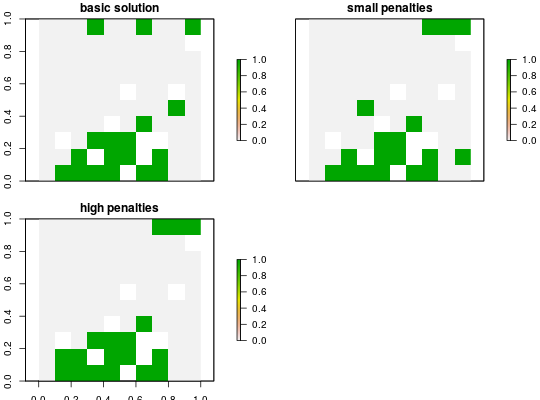

Add penalties to a conservation problem to favor solutions that clump
selected planning units together into contiguous reserves. Uses shared boundary
length as a measure of connectivity, equivelant to the boundary length modifier
(BLM) in Marxan.
Boundary data is calculated automatically unless the planning units in
x are stored in a data.frame, in which case boundary data must
be added as a matrix or data.frame. This function can only be used
for symmetric relationships between planning units; for asymmetric relationships
use the add_connectivity_penalties function.
add_boundary_penalties(x, penalty, edge_factor, boundary_data = NULL)
| x |
|
|---|---|
| penalty |
|
| edge_factor |
|
| boundary_data | A |
ConservationProblem-class object.
constraints, add_connectivity_penalties,
penalties.
# create basic problem p1 <- problem(sim_pu_raster, sim_features) %>% add_min_set_objective() %>% add_relative_targets(0.2) %>% add_default_solver() # create problem with low boundary penalties p2 <- p1 %>% add_boundary_penalties(5, 1) # create problem with high boundary penalties but outer edges receive # half the penalty as inner edges p3 <- p1 %>% add_boundary_penalties(50, 0.5) # solve problems s <- stack(solve(p1), solve(p2), solve(p3))#> Optimize a model with 5 rows, 90 columns and 450 nonzeros #> Variable types: 0 continuous, 90 integer (90 binary) #> Coefficient statistics: #> Matrix range [2e-01, 9e-01] #> Objective range [2e+02, 2e+02] #> Bounds range [1e+00, 1e+00] #> RHS range [6e+00, 1e+01] #> Found heuristic solution: objective 4135.27 #> Presolve time: 0.00s #> Presolved: 5 rows, 90 columns, 450 nonzeros #> Variable types: 0 continuous, 90 integer (90 binary) #> Presolved: 5 rows, 90 columns, 450 nonzeros #> #> #> Root relaxation: objective 3.490348e+03, 17 iterations, 0.00 seconds #> #> Nodes | Current Node | Objective Bounds | Work #> Expl Unexpl | Obj Depth IntInf | Incumbent BestBd Gap | It/Node Time #> #> 0 0 3490.34813 0 4 4135.27447 3490.34813 15.6% - 0s #> H 0 0 3597.0951275 3490.34813 2.97% - 0s #> #> Explored 0 nodes (17 simplex iterations) in 0.00 seconds #> Thread count was 1 (of 4 available processors) #> #> Solution count 2: 3597.1 4135.27 #> Pool objective bound 3490.35 #> #> Optimal solution found (tolerance 1.00e-01) #> Best objective 3.597095127479e+03, best bound 3.490348127696e+03, gap 2.9676% #> Optimize a model with 293 rows, 234 columns and 1026 nonzeros #> Variable types: 0 continuous, 234 integer (234 binary) #> Coefficient statistics: #> Matrix range [2e-01, 1e+00] #> Objective range [1e+00, 2e+02] #> Bounds range [1e+00, 1e+00] #> RHS range [6e+00, 1e+01] #> Found heuristic solution: objective 4152.27 #> Presolve time: 0.00s #> Presolved: 293 rows, 234 columns, 1026 nonzeros #> Variable types: 0 continuous, 234 integer (234 binary) #> Presolved: 293 rows, 234 columns, 1026 nonzeros #> #> #> Root relaxation: objective 3.511770e+03, 182 iterations, 0.00 seconds #> #> Nodes | Current Node | Objective Bounds | Work #> Expl Unexpl | Obj Depth IntInf | Incumbent BestBd Gap | It/Node Time #> #> 0 0 3511.77011 0 10 4152.27447 3511.77011 15.4% - 0s #> H 0 0 3611.0142184 3511.77011 2.75% - 0s #> #> Explored 0 nodes (182 simplex iterations) in 0.01 seconds #> Thread count was 1 (of 4 available processors) #> #> Solution count 2: 3611.01 4152.27 #> Pool objective bound 3511.77 #> #> Optimal solution found (tolerance 1.00e-01) #> Best objective 3.611014218420e+03, best bound 3.511770107145e+03, gap 2.7484% #> Optimize a model with 293 rows, 234 columns and 1026 nonzeros #> Variable types: 0 continuous, 234 integer (234 binary) #> Coefficient statistics: #> Matrix range [2e-01, 1e+00] #> Objective range [1e+01, 2e+02] #> Bounds range [1e+00, 1e+00] #> RHS range [6e+00, 1e+01] #> Found heuristic solution: objective 4235.27 #> Presolve time: 0.00s #> Presolved: 293 rows, 234 columns, 1026 nonzeros #> Variable types: 0 continuous, 234 integer (234 binary) #> Presolved: 293 rows, 234 columns, 1026 nonzeros #> #> #> Root relaxation: objective 3.615902e+03, 296 iterations, 0.00 seconds #> #> Nodes | Current Node | Objective Bounds | Work #> Expl Unexpl | Obj Depth IntInf | Incumbent BestBd Gap | It/Node Time #> #> 0 0 3615.90153 0 88 4235.27447 3615.90153 14.6% - 0s #> H 0 0 3737.1285111 3615.90153 3.24% - 0s #> #> Explored 0 nodes (296 simplex iterations) in 0.01 seconds #> Thread count was 1 (of 4 available processors) #> #> Solution count 2: 3737.13 4235.27 #> Pool objective bound 3615.9 #> #> Optimal solution found (tolerance 1.00e-01) #> Best objective 3.737128511084e+03, best bound 3.615901532029e+03, gap 3.2439%# plot solutions plot(s, main = c("basic solution", "small penalties", "high penalties"))